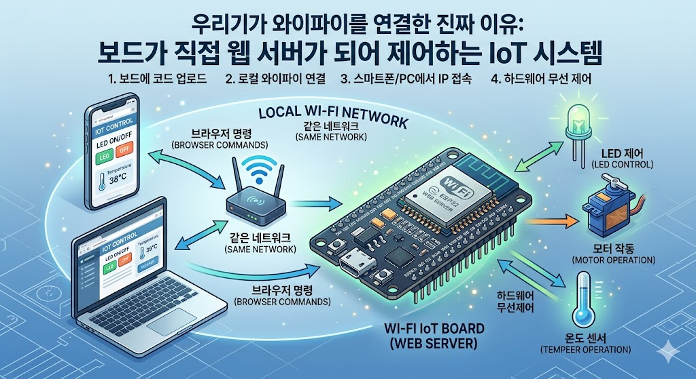

Chapter 5. 실전 IoT: 웹 기반 원격 LED 제어
우리가 와이파이를 연결한 진짜 이유입니다. 보드가 직접 웹 서버가 되어, 같은 네트워크 안의 스마트폰이나 PC의 브라우저 명령을 받아 동작하는 사물인터넷(IoT) 시스템의 원리를 단계별로 마스터해 봅니다.

네트워크망을 이용해 무선으로 하드웨어를 통제하는 기술
5.1 단계별 웹 서버 빌드업 실습
단번에 복잡한 제어 코드를 작성하면 에러의 원인을 찾기 어렵습니다. 네트워크 소켓(Socket) 통신의 기본부터 발생할 수 있는 여러 버그들을 하나씩 해결해가며 코드를 발전시켜 봅시다.
[1단계] 웹 브라우저 접속 감지하기 (포트 충돌 방지)
80번 포트(웹 기본 포트)를 열고 대기하다가 사용자가 접속하면 간단한 영문 인사를 건네는 코드입니다. Thonny에서 '재생' 버튼을 반복해서 누를 때 발생하는 OSError: [Errno 98] EADDRINUSE(포트가 이미 사용 중) 에러를 막기 위해 SO_REUSEADDR 설정이 추가되었습니다.
import network
import socket
import time
ssid = '본인의_와이파이_이름'
password = '본인의_비밀번호'
# Wi-Fi 연결
wlan = network.WLAN(network.STA_IF)
wlan.active(True)
wlan.connect(ssid, password)
while not wlan.isconnected():
time.sleep(0.5)
print('와이파이 연결 성공! IP 주소:', wlan.ifconfig()[0])
# 소켓 설정 및 대기
addr = socket.getaddrinfo('0.0.0.0', 80)[0][-1]
s = socket.socket()
# [중요] 이전 실행에서 닫히지 않은 포트가 남아있을 때 강제로 청소하고 재사용합니다.
s.setsockopt(socket.SOL_SOCKET, socket.SO_REUSEADDR, 1)
s.bind(addr)
s.listen(1)
print("1단계 기본 통신 서버 가동...")
while True:
cl, client_addr = s.accept()
request = cl.recv(1024).decode('utf-8')
# 브라우저에 응답 전송 후 소켓 닫기
cl.send('HTTP/1.0 200 OK\r\n\r\n')
cl.send('Hello! Connection Success from Pico 2.')
cl.close()
[2단계] 한글 글자 깨짐 현상 해결하기
마이크로파이썬 웹 서버에서 한글이 깨지는 이유는 두 가지입니다. 브라우저에게 한글 규격(UTF-8)으로 해석하라는 명시적 HTTP 헤더를 주지 않았거나, 문자열을 바이트 형태로 변환하지 않았기 때문입니다. 이 문제를 완벽하게 보완한 코드입니다.
import network
import socket
import time
ssid = '본인의_와이파이_이름'
password = '본인의_비밀번호'
wlan = network.WLAN(network.STA_IF)
wlan.active(True)
wlan.connect(ssid, password)
while not wlan.isconnected():
time.sleep(0.5)
ip = wlan.ifconfig()[0]
print(f'2단계 서버 가동! 접속 주소: http://{ip}')
addr = socket.getaddrinfo('0.0.0.0', 80)[0][-1]
s = socket.socket()
s.setsockopt(socket.SOL_SOCKET, socket.SO_REUSEADDR, 1)
s.bind(addr)
s.listen(1)
def get_html():
return """<!DOCTYPE html>
<html>
<head><meta charset="UTF-8"></head>
<body style="text-align:center; font-family:sans-serif; padding-top:50px;">
<h1 style="color:#2563eb;">Pico 2 무선 웹 서버 웹사이트</h1>
<p style="font-weight:bold; color:#10b981;">한글 깨짐 현상이 완전히 해결되었습니다!</p>
</body>
</html>"""
while True:
try:
cl, addr_info = s.accept()
request = cl.recv(1024).decode('utf-8')
# [핵심] Content-Type 헤더에 charset=utf-8을 명시하여 브라우저에게 한글임을 알려줍니다.
cl.send('HTTP/1.1 200 OK\r\nContent-Type: text/html; charset=utf-8\r\n\r\n'.encode('utf-8'))
# [핵심] HTML 문자열 데이터를 .encode('utf-8')을 통해 안전하게 변환하여 송신합니다.
cl.send(get_html().encode('utf-8'))
cl.close()
except Exception as e:
cl.close()
[3단계] 실전 IoT: POST 방식을 통한 정밀 원격 제어 (완성형)
일반적인 <a href="/?led=off"> 링크(GET 방식)를 사용하면, 최신 웹 브라우저들의 '사전 로딩(Link Prefetching)' 기능 때문에 사용자가 버튼을 누르지도 않았는데 서버의 주소를 미리 찔러보아 명령이 꼬이는 치명적인 IoT 버그가 발생합니다.
이를 해결하기 위해 브라우저가 멋대로 사전 호출을 할 수 없는 POST 방식(Form 태그)으로 버튼을 감싸고, 브라우저가 자동으로 요청하는 불필요한 신호(Favicon 등)를 완벽히 차단하여 단 1번의 클릭으로 즉각 제어되는 완성형 마스터 코드를 구축합니다.
import network
import socket
import time
from machine import Pin
ssid = '본인의_와이파이_이름'
password = '본인의_비밀번호'
# 내장 LED 제어 핀 생성
led = Pin("LED", Pin.OUT)
wlan = network.WLAN(network.STA_IF)
wlan.active(True)
wlan.connect(ssid, password)
while not wlan.isconnected():
time.sleep(0.5)
ip = wlan.ifconfig()[0]
print(f'★실전 IoT 서버 가동! 접속 주소: http://{ip}')
addr = socket.getaddrinfo('0.0.0.0', 80)[0][-1]
s = socket.socket()
s.setsockopt(socket.SOL_SOCKET, socket.SO_REUSEADDR, 1)
s.bind(addr)
s.listen(1)
# [POST 방식 반영] 사전 로딩 오작동을 막기 위해 form 태그를 활용합니다.
def get_iot_html(led_status):
status_color = "#10b981" if led_status == "켜짐" else "#ef4444"
return f"""<!DOCTYPE html>
<html>
<head>
<meta charset="UTF-8">
<meta name="viewport" content="width=device-width, initial-scale=1.0">
<title>Pico 2 IoT Control</title>
</head>
<body style="text-align:center; font-family:sans-serif; background-color:#f8fafc; padding-top:50px;">
<h1 style="color:#1e293b;">Pico 2 W 원격 제어 센터</h1>
<div style="margin:20px; font-size:20px;">현재 LED 상태: <span style="color:{status_color}; font-weight:bold;">{led_status}</span></div>
<div style="margin-top:40px; display: flex; justify-content: center; gap: 20px;">
<form action="/led_on" method="POST">
<button type="submit" style="font-size:24px; padding:15px 35px; background:#10b981; color:white; border:none; border-radius:10px; cursor:pointer; font-weight:bold;">LED 켜기 (ON)</button>
</form>
<form action="/led_off" method="POST">
<button type="submit" style="font-size:24px; padding:15px 35px; background:#ef4444; color:white; border:none; border-radius:10px; cursor:pointer; font-weight:bold;">LED 끄기 (OFF)</button>
</form>
</div>
</body>
</html>"""
current_status = "꺼짐"
while True:
try:
cl, addr_info = s.accept()
request = cl.recv(1024).decode('utf-8')
# 안전장치: 빈 요청(허수 신호)은 즉시 무시
if not request:
cl.close()
continue
# 안전장치: 브라우저가 자동 요청하는 아이콘(favicon) 신호는 거르고 통과
if 'favicon.ico' in request:
cl.send('HTTP/1.1 404 Not Found\r\n\r\n'.encode('utf-8'))
cl.close()
continue
# [정밀 판별] 브라우저가 폼 데이터로 전송한 POST 요청 경로에 매칭시킵니다.
if 'POST /led_on' in request:
led.value(1)
current_status = "켜짐"
print("웹 명령 접수: LED ON")
elif 'POST /led_off' in request:
led.value(0)
current_status = "꺼짐"
print("웹 명령 접수: LED OFF")
# 응답 전송 (브라우저가 예전 화면을 기억하지 못하도록 강력한 캐시 금지 헤더 추가)
cl.send('HTTP/1.1 200 OK\r\nContent-Type: text/html; charset=utf-8\r\nConnection: close\r\nCache-Control: no-cache, no-store, must-revalidate\r\n\r\n'.encode('utf-8'))
cl.send(get_iot_html(current_status).encode('utf-8'))
cl.close()
except Exception as e:
try: cl.close()
except: pass
5.2 스마트한 코딩 습관: 와이파이 설정 모듈화하기
앞으로 다양한 응용 프로젝트를 만들 텐데, 매번 긴 와이파이 접속 코드를 복사해서 붙여넣는 것은 비효율적입니다. 실무 개발자들처럼 네트워크 설정을 별도의 모듈(파일)로 분리해 두고, 필요할 때 단 한 줄의 코드로 불러와서 사용하는 방법을 적용해 보겠습니다.
Thonny에서 새 파일을 열고 아래 코드를 작성한 뒤, Pico 보드 내부에 wifi.py라는 이름으로 저장하세요.
# wifi.py
import network
import time
SSID = '본인의_와이파이_이름'
PASSWORD = '본인의_비밀번호'
def connect():
wlan = network.WLAN(network.STA_IF)
wlan.active(True)
wlan.connect(SSID, PASSWORD)
print("와이파이 연결 중...")
while not wlan.isconnected():
time.sleep(0.5)
ip = wlan.ifconfig()[0]
print(f'와이파이 연결 성공! IP 주소: {ip}')
return ip
5.3 심화 응용: 웹 서버 200% 활용하기
이제 wifi.py 파일을 활용해 메인 코드를 아주 깔끔하게 유지하면서, 단순한 ON/OFF를 넘어서는 세 가지 실전 응용 기법을 실습해 봅니다.
[응용 1] 내장 온도 센서 모니터링하기
웹 서버는 외부의 명령을 받는 것뿐만 아니라, 보드의 상태를 사용자에게 보여주는(모니터링) 것도 가능합니다. 외부 센서 없이도 실습할 수 있도록, 기판 정중앙에 있는 까만 핵심 칩(RP2350) 내부에 탑재된 온도 센서의 값을 읽어 웹 페이지에 실시간으로 표시해 봅니다.
내 온도 센서의 비밀 위치
기판을 이리저리 살펴봐도 온도 센서 부품은 따로 보이지 않을 것입니다. 이 센서는 방 안의 날씨를 재는 용도가 아니라, 스마트폰이나 컴퓨터의 CPU처럼 칩 자신이 일하면서 얼마나 열을 받고 있는지(코어 온도)를 스스로 체크하기 위해 칩 내부(Silicon Die)에 아예 일체형으로 숨어 있기 때문입니다.
따라서 아래 코드에서 사용하는 ADC(4) 채널은 외부 핀이 아닌, 이 칩 내부의 온도 센서와 직통으로 연결된 비밀 통로입니다.
실전 IoT 팁: 측정 시 칩 자체의 '체온'이 섞이므로 실제 실내 온도보다 1~2도 높게 측정되는 경향이 있습니다. 정밀한 온도/습도 측정기나 스마트 온실을 만들 때는 향후 챕터에서 배울 DHT11이나 BME280 같은 전용 외부 온습도 센서를 연결하는 것이 정석입니다!
import socket
import wifi # 우리가 만든 모듈을 불러옵니다
import time
from machine import ADC
# 1. 단축된 와이파이 연결 및 IP 획득
ip = wifi.connect()
# 2. 웹 서버 소켓 설정
addr = socket.getaddrinfo('0.0.0.0', 80)[0][-1]
s = socket.socket()
s.setsockopt(socket.SOL_SOCKET, socket.SO_REUSEADDR, 1)
s.bind(addr)
s.listen(1)
print(f'온도 모니터링 서버 가동! 접속: http://{ip}')
# 3. RP2350 내장 온도 센서 설정 (4번 ADC 채널)
temp_sensor = ADC(4)
conversion_factor = 3.3 / 65535
def read_temperature():
reading = temp_sensor.read_u16() * conversion_factor
temperature = 27 - (reading - 0.706) / 0.001721
return round(temperature, 1)
def get_temp_html(temp):
return f"""<!DOCTYPE html>
<html>
<head><meta charset="UTF-8"></head>
<body style="text-align:center; font-family:sans-serif; padding-top:50px;">
<h1>Pico 2 시스템 모니터링</h1>
<div style="font-size:30px; margin:30px;">현재 코어 온도: <strong style="color:#ef4444;">{temp}°C</strong></div>
<button onclick="location.reload()" style="padding:10px 20px; font-size:18px; cursor:pointer;">온도 새로고침</button>
</body>
</html>"""
while True:
try:
cl, addr_info = s.accept()
request = cl.recv(1024).decode('utf-8')
# 클라이언트 접속 시 온도를 읽고 HTML에 포매팅하여 전송
current_temp = read_temperature()
cl.send('HTTP/1.1 200 OK\r\nContent-Type: text/html; charset=utf-8\r\n\r\n'.encode('utf-8'))
cl.send(get_temp_html(current_temp).encode('utf-8'))
cl.close()
except Exception:
try: cl.close()
except: pass
[응용 2] 폼(Form) 전송 방식으로 슬라이더 밝기 조절 (PWM 제어)
디지털 제어(0과 1)를 넘어, HTML의 <input type="range"> 태그를 이용해 외부 LED의 밝기를 0%에서 100%까지 부드럽게 제어하는 아날로그(PWM) 제어 방식입니다. 수치를 적용한 후에도 슬라이더 위치와 화면의 밝기 값이 그대로 유지되도록 상태 관리를 추가했습니다.
Pico 2 W 사용 시 주의사항: 내장 LED("LED")는 메인 칩(RP2350)이 아닌 와이파이 보조 칩에 연결되어 있어, 메인 칩의 고유 기능인 PWM(미세 밝기 조절)을 직접 사용할 수 없습니다(ValueError 발생). 단순 ON/OFF는 가능하지만 아날로그 제어를 위해서는 반드시 일반 GPIO 15번 핀에 외부 LED와 저항(220Ω)을 연결한 뒤 실습해야 합니다!
import socket
import wifi
import time
from machine import Pin, PWM
ip = wifi.connect()
addr = socket.getaddrinfo('0.0.0.0', 80)[0][-1]
s = socket.socket()
s.setsockopt(socket.SOL_SOCKET, socket.SO_REUSEADDR, 1)
s.bind(addr)
s.listen(1)
print(f'PWM 폼 제어 서버 가동! 접속: http://{ip}')
# 15번 핀에 연결된 외부 LED를 PWM 모드로 설정 (밝기 조절용)
led_pwm = PWM(Pin(15))
led_pwm.freq(1000)
# 현재 밝기를 기억할 변수 설정 (초기값: 32768)
current_brightness = 32768
led_pwm.duty_u16(current_brightness)
# 현재 밝기 값을 전달받아 HTML을 동적으로 생성합니다.
def get_pwm_html(brightness):
return f"""<!DOCTYPE html>
<html>
<head><meta charset="UTF-8"><meta name="viewport" content="width=device-width, initial-scale=1.0"></head>
<body style="text-align:center; padding-top:50px; font-family:sans-serif;">
<h1>외부 LED 밝기 미세 조절기</h1>
<div style="font-size:20px; margin:20px;">현재 적용된 밝기: <strong style="color:#2563eb;">{brightness}</strong> / 65535</div>
<form action="/set_light" method="POST">
<!-- value 속성에 현재 밝기를 넣어 슬라이더 위치를 유지하고, oninput으로 실시간 수치를 보여줍니다 -->
<input type="range" name="brightness" min="0" max="65535" value="{brightness}" style="width:80%; margin:20px 0;" oninput="document.getElementById('live_val').innerText = this.value"><br>
<div style="margin-bottom: 20px; color:#64748b;">조절 중인 수치: <span id="live_val">{brightness}</span></div>
<button type="submit" style="padding:15px 30px; font-size:18px; background-color:#10b981; color:white; border:none; border-radius:8px; cursor:pointer; font-weight:bold;">밝기 적용하기</button>
</form>
</body>
</html>"""
while True:
try:
cl, addr_info = s.accept()
request = cl.recv(1024).decode('utf-8')
# POST 요청의 데이터 본문(Body)에서 brightness 값 추출
if 'POST /set_light' in request:
try:
body = request.split('\r\n\r\n')[1]
brightness_value = int(body.split('=')[1])
# 추출한 값을 전역 변수에 저장하고 LED에 적용
current_brightness = brightness_value
led_pwm.duty_u16(current_brightness)
print(f"밝기 변경 완료: {current_brightness}")
except:
pass
cl.send('HTTP/1.1 200 OK\r\nContent-Type: text/html; charset=utf-8\r\n\r\n'.encode('utf-8'))
# 업데이트된 밝기 변수를 함수에 넣어 전송
cl.send(get_pwm_html(current_brightness).encode('utf-8'))
cl.close()
except Exception:
try: cl.close()
except: pass
[응용 3] 깜빡임 없는 실시간 무선 디밍 제어 (JavaScript Fetch API)
응용 2의 코드는 <form> 태그를 사용하여 '적용하기' 버튼을 눌러야만 화면이 새로고침되면서 하드웨어에 반영됩니다. 프론트엔드 자바스크립트의 비동기 통신 기술인 fetch()를 슬라이더의 동작(oninput)에 결합하면, 사용자가 버튼을 누르지 않고 슬라이더를 움직이는 즉시 실시간으로 백그라운드 데이터를 전송하여 부드럽게 조명이 조절되는(Real-time Dimming) 실제 스마트홈 앱 같은 퀄리티를 낼 수 있습니다.
import socket
import wifi
import time
from machine import Pin, PWM
ip = wifi.connect()
addr = socket.getaddrinfo('0.0.0.0', 80)[0][-1]
s = socket.socket()
s.setsockopt(socket.SOL_SOCKET, socket.SO_REUSEADDR, 1)
s.bind(addr)
s.listen(1)
print(f'실시간 무선 디밍 서버 가동! 접속: http://{ip}')
# 15번 핀에 연결된 외부 LED를 PWM 모드로 설정
led_pwm = PWM(Pin(15))
led_pwm.freq(1000)
led_pwm.duty_u16(32768)
def get_realtime_html():
return """<!DOCTYPE html>
<html>
<head>
<meta charset="UTF-8">
<meta name="viewport" content="width=device-width, initial-scale=1.0">
<script>
// 슬라이더가 움직일 때마다 즉시 실행되는 함수
function updateBrightness(val) {
// 1. 화면의 텍스트를 즉시 변경
document.getElementById('live_val').innerText = val;
// 2. 화면 새로고침 없이 백그라운드에서 GET 방식으로 Pico에 수치 전송
fetch('/set_light?value=' + val)
.catch(err => console.log("네트워크 지연 발생"));
}
</script>
</head>
<body style="text-align:center; padding-top:50px; font-family:sans-serif;">
<h1>실시간 무선 디밍(Dimming) 제어</h1>
<div style="font-size:24px; margin:30px;">실시간 밝기: <span id="live_val" style="color:#2563eb; font-weight:bold;">32768</span> / 65535</div>
<!-- oninput 속성을 사용해 마우스를 드래그하는 모든 순간 함수를 호출합니다 -->
<input type="range" min="0" max="65535" value="32768" style="width:80%; margin:20px 0;" oninput="updateBrightness(this.value)">
<p style="color:#64748b; margin-top:30px;">적용 버튼을 누를 필요 없이 슬라이더를 움직여 보세요!</p>
</body>
</html>"""
while True:
try:
cl, addr_info = s.accept()
request = cl.recv(1024).decode('utf-8')
if not request or 'favicon.ico' in request:
cl.close()
continue
# 1. 자바스크립트 Fetch가 보낸 실시간 수치 조절 요청 처리
# 예시: GET /set_light?value=45000 HTTP/1.1
if 'GET /set_light?value=' in request:
try:
# URL에서 숫자 부분만 쪼개서 추출
val_str = request.split('value=')[1].split(' ')[0]
brightness = int(val_str)
led_pwm.duty_u16(brightness)
except:
pass
# 브라우저에게 수신 완료되었다는 최소한의 신호만 보냅니다 (전체 HTML 재전송 X)
cl.send('HTTP/1.1 200 OK\r\n\r\nOK'.encode('utf-8'))
cl.close()
continue
# 2. 최초로 주소창에 접속했을 때만 전체 HTML 페이지를 전송
cl.send('HTTP/1.1 200 OK\r\nContent-Type: text/html; charset=utf-8\r\n\r\n'.encode('utf-8'))
cl.send(get_realtime_html().encode('utf-8'))
cl.close()
except Exception:
try: cl.close()
except: pass
5.4 웹 제어 작동 확인
- 최종 코드를 실행하고 하단 콘솔 셸 창에 찍히는
http://192.168.x.x형태의 주소를 확인합니다. - 보드와 반드시 같은 와이파이(공유기)에 물려 있는 스마트폰이나 노트북의 인터넷 주소창에 해당 주소를 입력하고 접속합니다.
- 한글 깨짐과 한 박자 늦게 꺼지던 꼬임 현상이 완벽히 해결된 대시보드가 열립니다. 버튼이나 슬라이더를 조작하면 단 1번 만에 외부 LED 및 센서가 완벽하게 연동하여 반응합니다.
🚀 다음 단계로 나아갈 준비
우리는 이제 웹 프로토콜을 이용해 물리적인 전력을 완벽하게 통제하는 귀중한 지식을 얻었습니다. 지금은 비록 보드 내부에 붙은 작은 LED 하나만을 제어하고 있지만, 이 제어 핀에 외부 부품들을 연결하면 실제 가정용 전등, 스마트 가전, 전동 블라인드 등을 움직이는 무궁무진한 홈 사물인터넷(IoT) 시스템으로 확장해 나갈 수 있습니다. 다음 파트에서는 다양한 센서들을 브레드보드에 배치하고 제어하는 실습을 이어서 진행해 보겠습니다.